I found Uptown 7th serendipitously, wandering around downtown Calgary. It had this underground feel — right across from the city train station. The owner was a creative entrepreneur who was genuinely open to whatever I wanted to try. I'd come in with some idea that probably sounded insane and he'd just go with it.
There was no real structure to the place, which is exactly what made it work. We set up a shadow & light show in the gallery window so people waiting for the train had something to watch. Sometimes he'd blow bubbles out the window. We painted on the floor, experimented with light, stayed too late. It was a place to play.
The building got bought out and the gallery doesn't exist anymore, but I think about it a lot. It felt like a home base — somewhere I could test things without worrying about whether they'd work.
 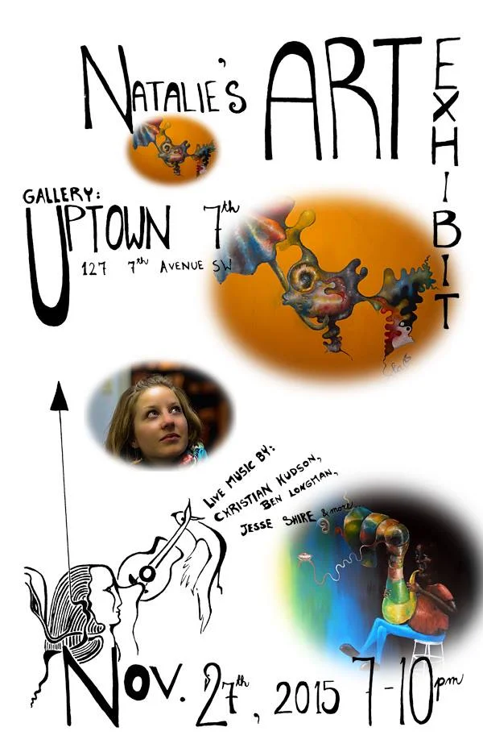
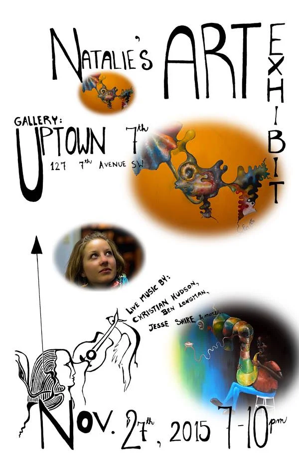
 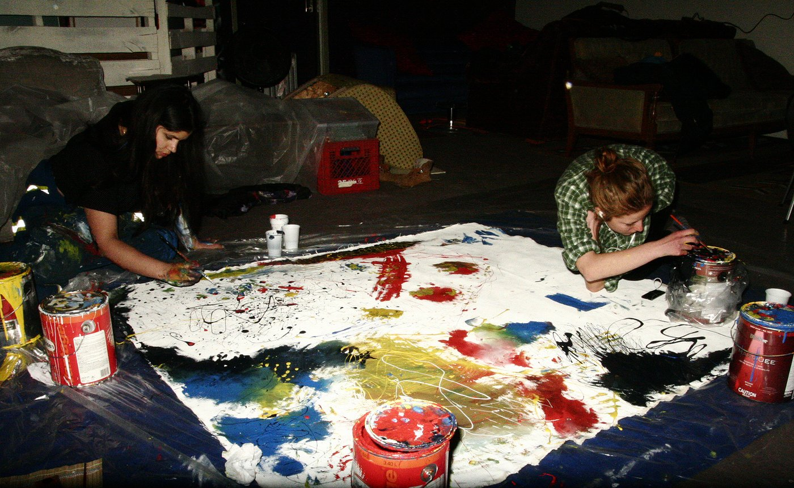
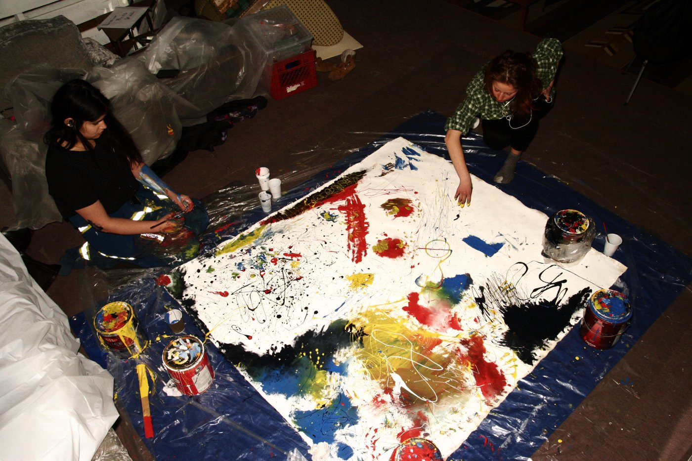
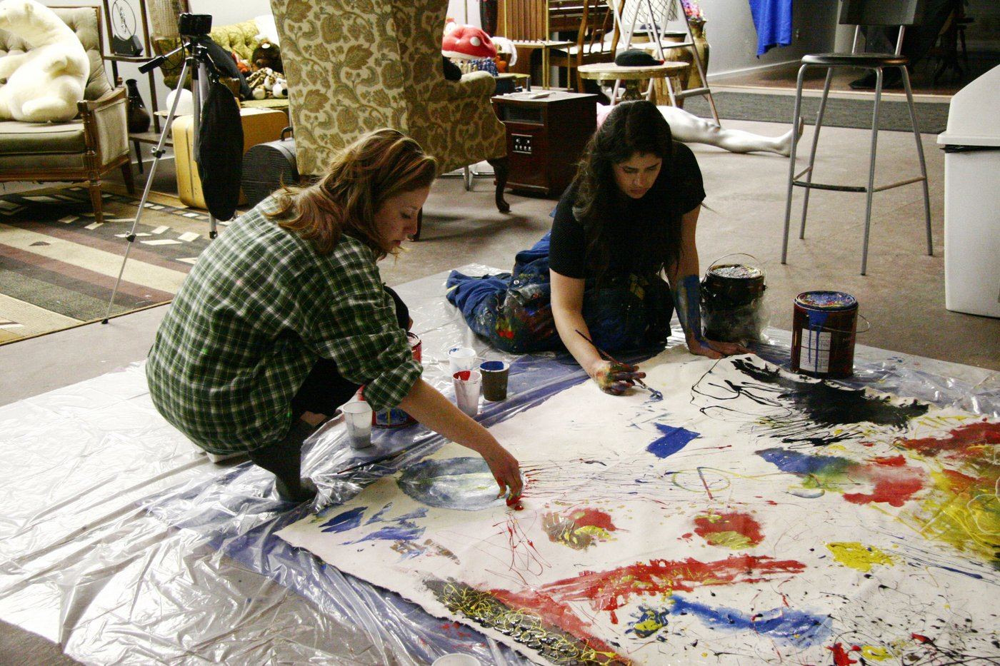
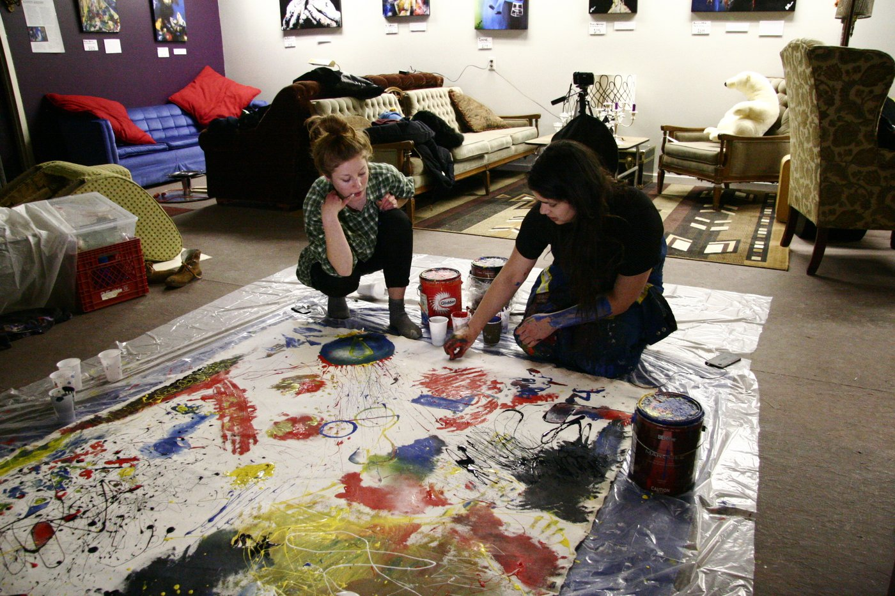
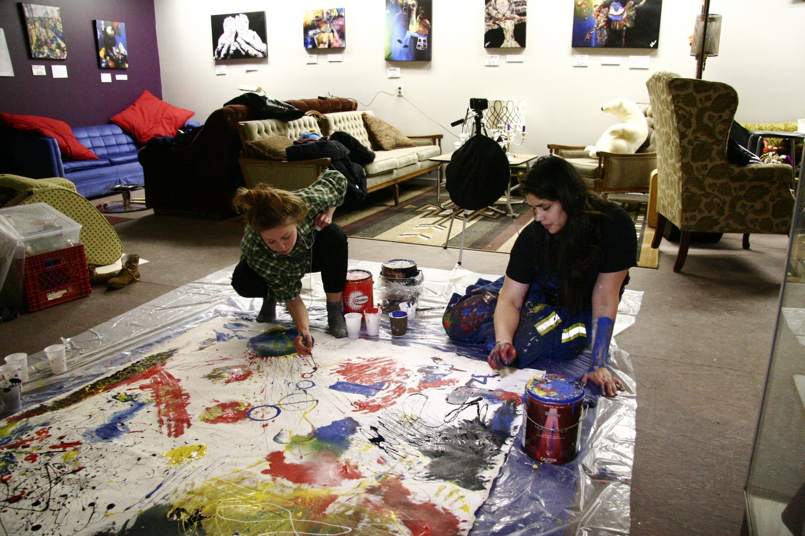
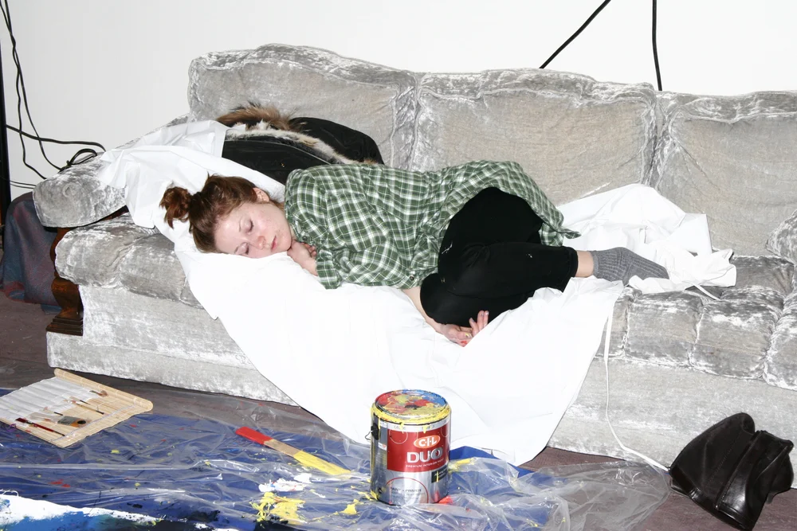
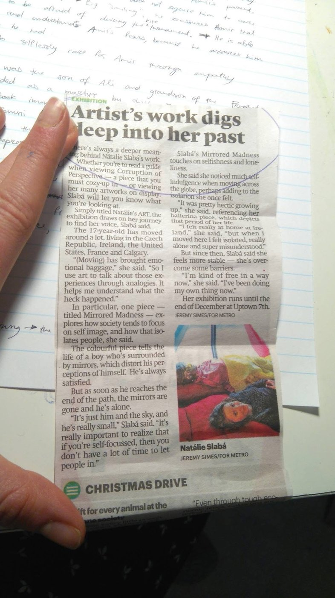
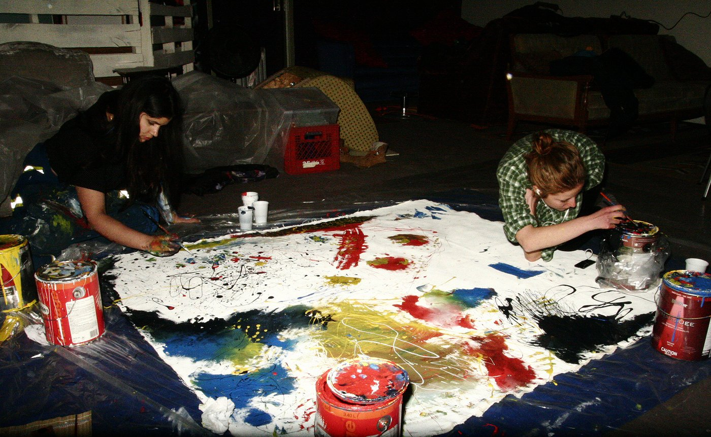
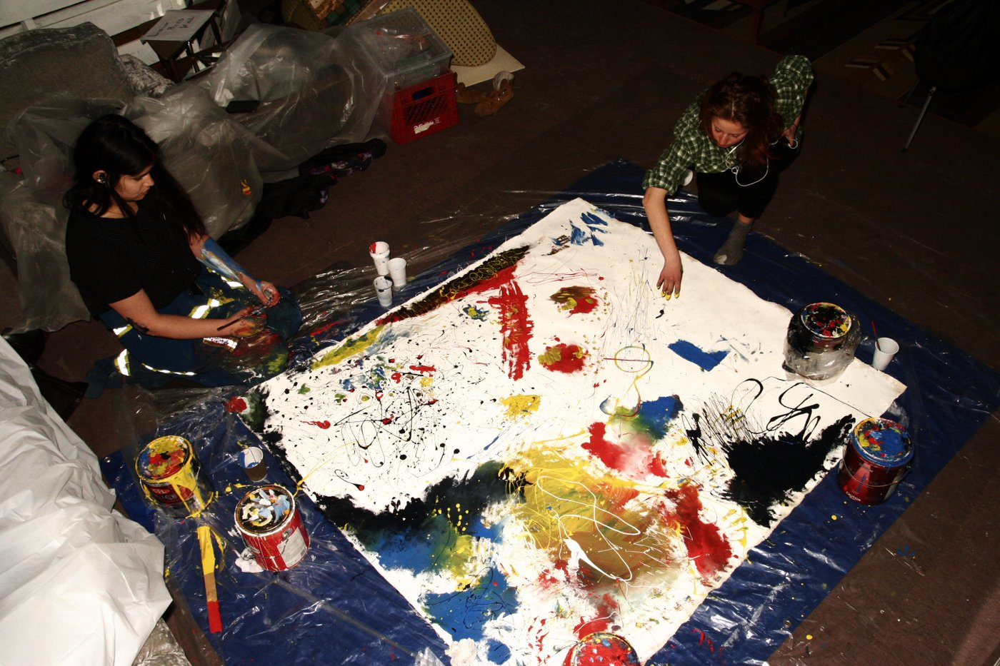
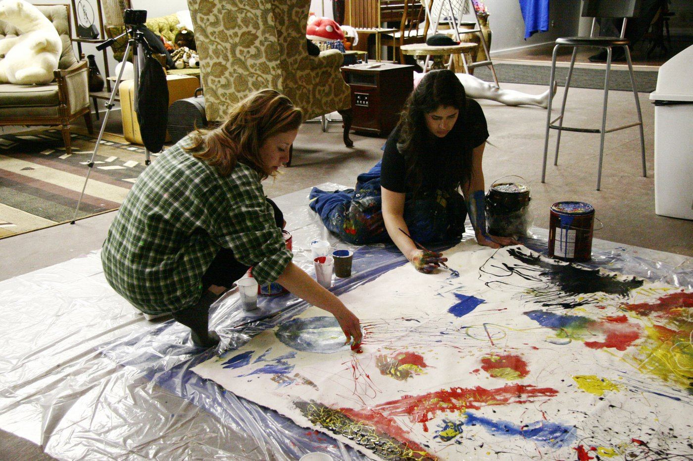
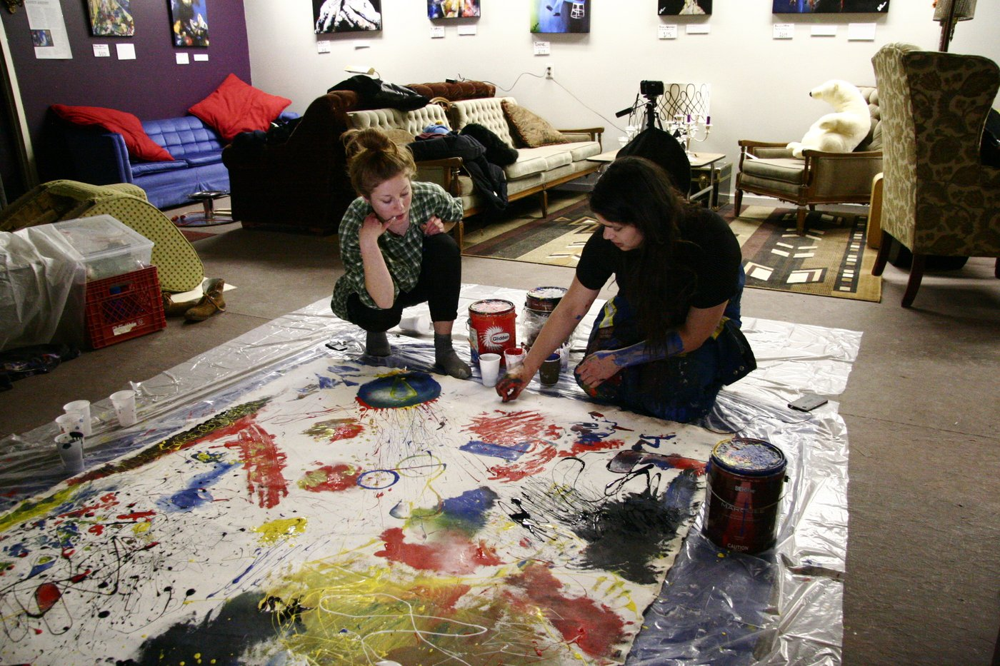
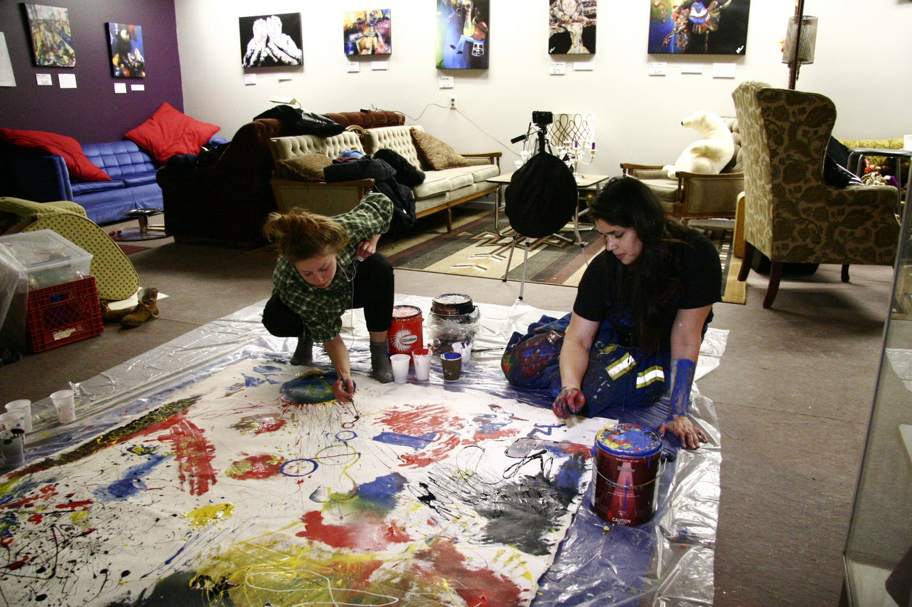
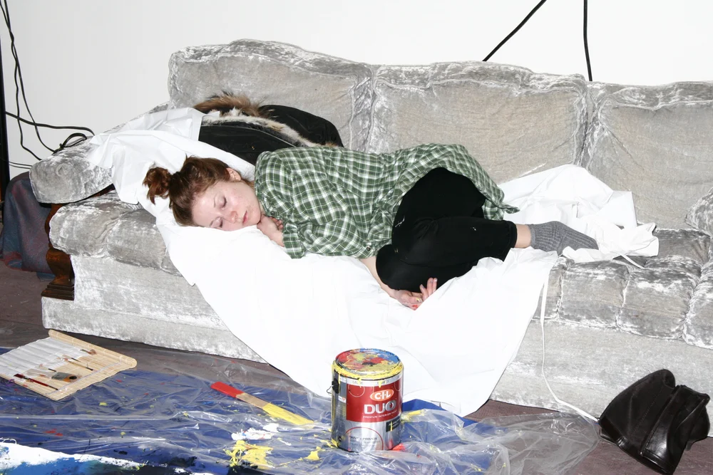
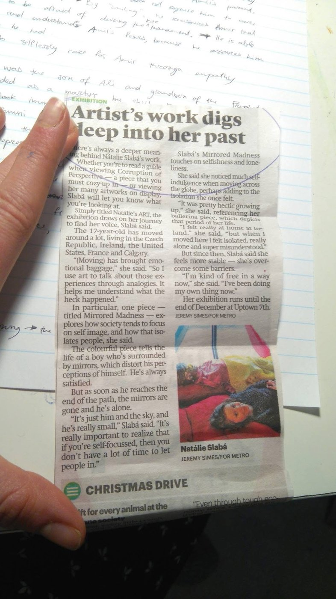